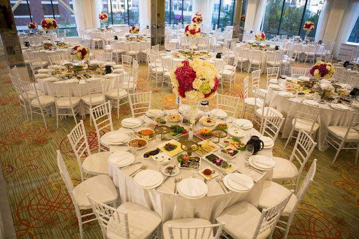

A Tragicomedy in Nine Scenes
Exercise 7.1

Consider the following NP-complete problems:
Each of the following eight scenes presents a problem. Show that the problem is hard after identifying it with one of the problems in the previous list.
Johnny asked Roy to organize a dinner for the usual group of friends. Then, Roy has booked a table at a restaurant; it’s a very big round table and everybody fits. However, when they get at the place, the first difficulties arise.
JOHNNY: Listen Roy, it seems that some people in the group can’t stand each other. It would be better if two guys who are angry with each other don’t have to sit side by side.
ROY: Come on… Look, let’s get straight to the point. I want you to collect all the relevant information; that is, for each pair of people, whether they are angry with each other or not. I’ll figure out how to seat them so that nobody has a neighbor at the table with whom he or she is angry.
With all the data in his hands, after a long while, Roy hasn’t yet finished finding a solution. Moreover, Johnny is back with a worried face.
JOHNNY: Hey, it seems that the guys who are angry with each other don’t even want to sit at the same table. But don’t worry, I’ve asked at the restaurant and they said they can prepare three large tables for us.
ROY: Let’s see, I’ll try to distribute people into three groups so that there’s no couple of angry fellows inside any of the groups.
While Roy thinks on how to distribute people around the three tables, Johnny appears again saying that the restaurant is about to close and that they’d better look for a different place for dinner.
ROY: Look, before looking for another place, I’d like to make some things clear to the group: When they say “hey, hey, I don’t want to sit near this or that person”, they’re being childish! I want to talk to them seriously. The problem is that I’m a little aphonic and if I speak to everybody, I’ll ran out of voice. I want you to choose k representatives so that, for any person in the group, there is one of the representatives with whom that person is not angry. This way, the k representatives will spread the message to the whole group.
Since Johnny doesn’t succeed in choosing the k representatives, he finally takes a megaphone and tells everybody that if they keep acting like that, they’ll have to go home very soon.
JOHNNY: Listen, I have a city map where I’ve located the squares having good restaurants and the streets joining them. We could walk through all of them and check whether they have free tables.
ROY: OK, give me the map for a while so that I can choose the tour; it’s cold outside and I’m not feeling like visiting the same place twice.
After a long while, Roy still can’t find the solution in spite of having all the available information. Johnny wants to help him:
JOHNNY: Listen Roy, I have a handful of colleagues in town and for each of these squares, a friend of mine lives there. Give me some bucks and I’ll phone them and ask them if we can have dinner at any restaurant in their squares.
ROY: Man, I’m skint and can’t afford so many calls. I’ll give you enough for m phone calls. You can ask your friends to look for restaurants not only in their squares but also in the squares one street away from theirs. Choose the right friends so that they can cover all the squares.
Since he doesn’t succeed, Johnny calls to the first person in the list and it turns out that there is a restaurant with free tables near him. When they get there, there is only one table with k chairs, and they are closing soon.
JOHNNY: I got it, here’s a solution: We’ll have dinner by turns; when somebody finishes, he or she will go out and somebody else will come in. Look, some time ago I collected information about how long everyone takes for dinner. You know I have some weird hobbies…
ROY: My God…
JOHHNY: With all this data, we can plan the distribution of people on the chairs, so that everybody can have dinner before they close.
ROY: OK, give me that list with the time everybody takes to have dinner and I’ll see what can I do. Someday you’ll tell me about what information you collect from people…
In the meanwhile, Johnny gets a phone call from a friend saying that near that place there’s a very cool restaurant. They all go there at once. When they get there, it seems there are only a few small tables and, on top of that, they all have different colors.
JOHNNY: Listen, Roy. It seems that people are a little bored and they want to take advantage of the situation to sit properly by couples. We are as many boys as girls, and everybody has their own preferences. But the colored tables play a role, too. For example, that person accepts to sit with that other person only if the table is pink, and with some other person if the table is blue. We’ll have to find a distribution that satisfies everyone’s restrictions. It seems that after all this time without eating, the troop is feeling a bit strange.
ROY: I’m not in the mood with all this nonsense, but OK, I’ll try.
They haven’t succeeded and it is already very late. Roy and Johnny can only find a small bar having just one table with one chair. However, it is open until very late.
JOHNNY: It seems that the band is a bit bored. Some guys want to go out and come back later. Here I have, for every person, the time they’ll come back and the time they’ll have to go home. And I still have the list of the time everybody needs to have dinner. I think that, with this information, it should be easy to see if everybody can be assigned a time so that they can sit on the chair and eat according to their schedules.
ROY: Listen Johnny, I’m fed up. I want you to know that this is going to be the last thing I do for this gang. Come on, give me this data and I’ll see what can I do.
In this scene, it is not enough to identify a problem from the list; it is necessary to find a reduction.
Finally, Roy and Johnny decide to have dinner together at that place, they have only had to ask for another chair to the waitress. They have given an address to the rest of the group where they will just find a wasteland with the highest criminality index in town.
JOHNNY: Come on, man, don’t take it like that. Today we just had bad luck.
ROY: Look, it’s not bad luck at all. It’s not the first time this happens to me. I’m foolish and I’ll never learn. Now, I want you to listen carefully. I know I told you before, but this time I’m serious: I’ll never ever organize anything else for this gang. And when I say never, it’s never. In fact, I don’t want even to meet them again.
JOHNNY: OK, right! But it’s a pity. Next week, we were thinking of going together to a holiday camp. You know, nature, pure air, quiet, fun, roast meat, naked baths in the river…
ROY: Well, that sounds good! But I don’t know, these things always go wrong in the end.
JOHNNY: Besides, this time Steffy is coming. Do you remember?
ROY: STEFFY!?!?!?
JOHNNY: Yes, and she said she’s longing very much to see you. I think she’s going to have a big disappointment if you don’t show up.
ROY: Hummm… well… maybe I’ve gone a bit too far. In the end, they are good guys… Sometimes they’re unbearable, but they’re good people, and that’s what matters. Friendship, in fact, is full of bad moments, but it’s mainly full of marvelous moments of bliss. Come on! What the hell! I’m coming. And if you want, I can help you organize things.
JOHNNY: Perfect! You’re the best! A winner, for sure! Come and let’s organize it right now. Let’s see, the only problem is that there are k cars and…